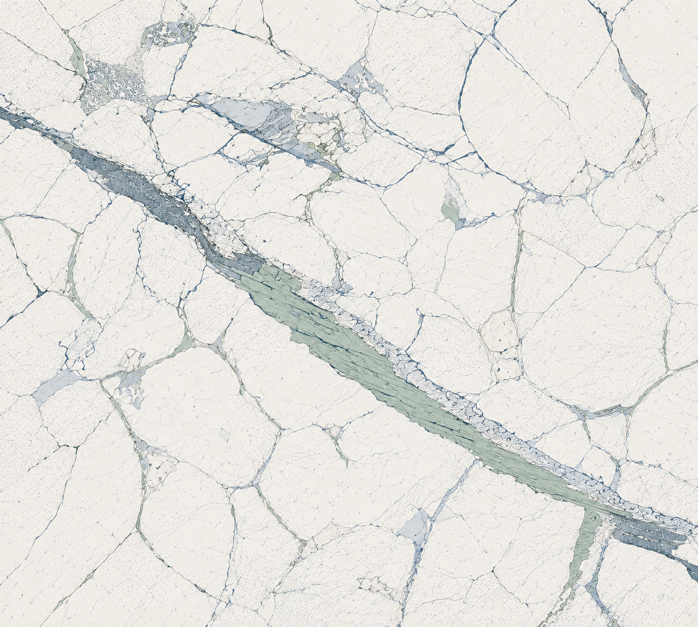

Research
Research Themes
Experimental and computational work on fractured rock, reactive systems, subsurface deformation and surface uplift, and interfacial fluid dynamics.

Fractured rock
Elastic, hydraulic, and frictional behavior under dynamic stressing.
Reactive transport & CO2 Storage
Chemo-mechanical coupling, mineralization, and reaction-driven cracking.
Subsurface Deformation & Surface Uplift
Co-evolution of subsurface deformation and surface uplift in the Delaware Basin.
Contact-line Dynamics
Fluid spreading instabilities and deposition of spreading volatile mixtures.